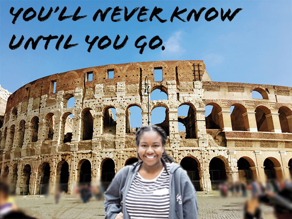

Hello, my name is Kaili Johnson and i’m a sophomore at Syracuse University. I am a communications design major interested in web/app design and branding. I have skills in graphic design such as logo and poster design. One accomplishment I have had in the past few months is I made the dean's list last semester. Some hobbies I have are cooking and drawing. Currently my favorite tv shows are Get Even and Schitts Creek. My favorite movie right now is The Peanut Butter Falcon.
A fun fact about me is I love to travel. A few places I've been to are Rome, Paris, Hawaii, Aruba, Cayman Islands, and the Dominican Republic.

© 2020